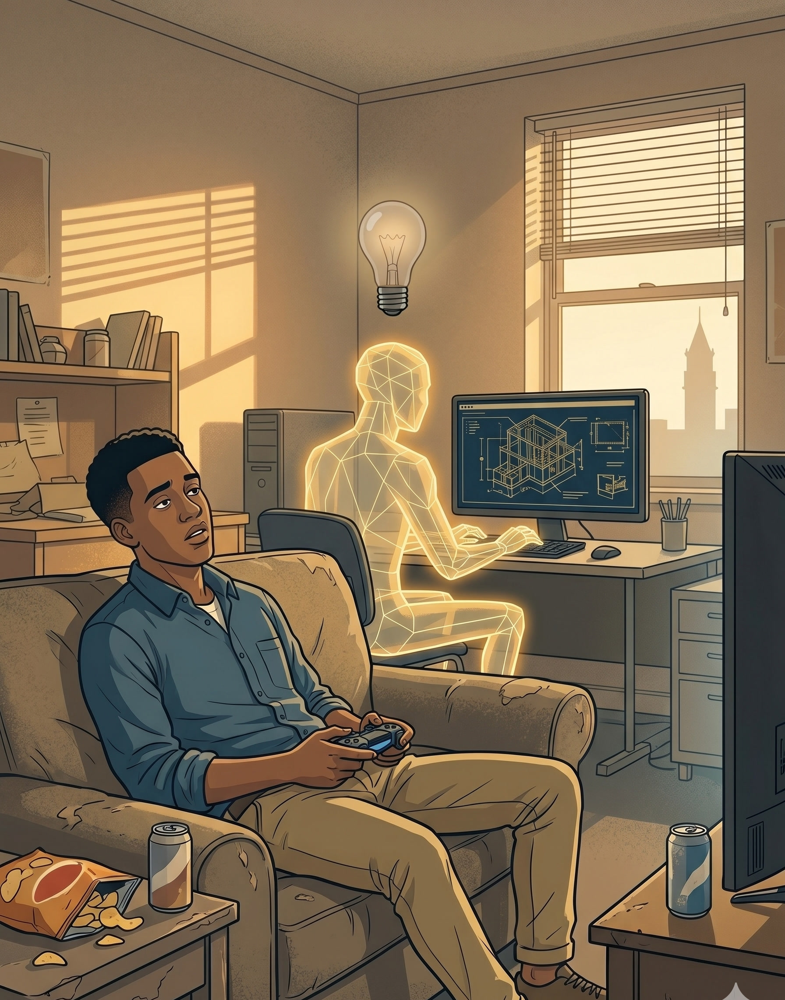

I love to teach, and I love to build. I teach students to build — with code, and now with
AI.
A.B. (Physics) and Ph.D. (Computer Science) from Harvard, supervised by
Matt Welsh. Deployed wireless sensor networks on active volcanos. Researched mobile systems at the
University at Buffalo, taught
operating systems
and
internet basics, and built the world’s first
smartphone platform testbed. Now Teaching Professor at Illinois, teaching computing to thousands of students per year using
novel technology and pedagogy.
Anyone — accountants, analysts, operations managers — can use this system with little training.
Detailed computer coding is no longer necessary.
Since we don't know how to make AI wise, we ought not give AI systems tasks that demand wisdom.
Computers will soon devise their own procedures for achieving goals we specify in plain language.
It is practically impossible to teach good programming to students who have had prior exposure to AI tools:
as potential programmers they are mentally mutilated beyond hope of regeneration.
We are about to see millions of people writing their own software.
History Rhymes
“I decided data processors ought to be able to write their programs in English, and the
computers would translate them into machine code.”
“Working within the loose constraints of predetermined strategies, computers will in due course
be able to devise and simplify their own procedures for achieving stated goals.”
“It is practically impossible to teach good programming to students that have had a prior
exposure to BASIC: as potential programmers they are mentally mutilated beyond hope of
regeneration.”
❌ — Find & destroy the first 📦 matching this. ✅ if found, ⛔ if not.
🔄 — Flip the whole thing 🙃.
🖨️ — Spit out "📦 → 📦 → 📦 → ∅"
⚠️ Watch out for: 📭 and lonely 📦.
Homework 3: 🔗 List
Build a 🔗 with these powers:
➕ — Stick a new 📦 at the 🔚.
❌ — Find & destroy the first 📦 matching this.
✅ if found, ⛔ if not.
🔄 — Flip the whole thing 🙃.
🖨️ — Spit out "📦 → 📦 → 📦 → ∅"
⚠️ Watch out for: 📭 and lonely 📦.
Fall 2025: A Failed Experiment
“The project is too difficult to do by yourself, yet too easy to do with Claude.”
“My flow for working on the assignment ended up being: 1. Hey Claude, look at X test and
expand it to make a comprehensive test suite. 2. Hey Claude, now write the code to pass the
tests!”
“I believe we all had Claude do all of the coding for each assignment.”
“You can just ask Claude to do everything for you.”
Our experience shows measured improvement in performance with frequent small assessment compared to
high-stakes exams. Short-term memory is the ultimate confounder with high-stakes exams.
Help Students Not Get Behind
Assessment frequency limits how far students can unknowingly fall behind. Eight weeks in is too late;
two weeks in is salvageable.
Student-Friendly Grading
More data enables dropping low scores, second-chance assessments, and catch-up grading —
universal design, not special accommodations.
Probably Less Stressful
Frequent assessment becomes routine; high-stakes exams are always unusual. Combined with friendly
policies and preparation support, overall stress is lower.
Preparation Drives Learning
Students prepare for assessments, and preparation drives learning. Spaced preparation mirrors spaced
repetition, one of the most effective learning strategies.
Support Students Proactively
Frequent data lets you spot and approach struggling students early, replicating the feeling of a small
class even at scale.
Students Learn How to Learn
More assessments give students more chances to develop effective study habits, especially combined
with policies like dropping low scores.
Course Feels Easier
By scaffolding effort, students achieve more while feeling like they are doing less. One mile a day
for 30 days feels easier than 30 miles in one day.
Supports Successful Strategies
Design your grade structures to match how you'd tell a student to succeed. Frequent small deadlines
mirror real-world work better than midterm + final.
Improves Course Design
Data from tightly-scoped assessments points directly at problems with course sequencing and pacing,
enabling rapid iteration.
Support Student Preparation
Telling students what is on the quiz is OK — it helps them prepare and reduces anxiety. Every
quiz can have a practice version.
Simplifies Administration
Absences accommodated by drops — no more doctor's notes. Frequent doesn't mean rigid; build in
flexibility.
Should the computer program the kid, or should the kid program the computer?
Seymour Papert · in Alan Kay, A Personal Computer for Children of All
Ages · 1972
A structured chat works through the reading. A hidden second agent scores engagement; readiness
levels surface to the instructor before the meeting starts.
During Class — Engagement
No lecturing. Agents facilitate small-group discussion, surface patterns across the room, and signal
when a group is ready to share. Humans do the thinking and talking.
By augmenting human intellect we mean increasing the capability of a person to approach a complex
problem situation, to gain comprehension, and to derive solutions.
Douglas Engelbart · Augmenting Human Intellect
· 1962
Conversational Programming. Designing and building software through conversation with
AI — a studio in spirit before the formal studios begin.
Computing in Culture. How software has reshaped human behavior. The critical lens runs
in parallel with learning to build.
Agentic Software Development. Constructing and evaluating agents, agentic workflows,
real deployment. Students learn to be effective directors of AI.
AI Models and Agents. How models actually work. Placed after fluency: students
step back to reason about systems they’ve already built with.
Integrative Design Studio I. Students bring a paired domain problem into the
studio and design software around it. Architecture-style critique.
How Software Works. The classical programming course — what happens beneath the
conversational layer. Doubles as a bridge into CS upper-division electives.
Any existing minor on campus. Each student braids in another field — biology, business, design,
the humanities. Ideas and problem-understanding drive the work; the domain tells you
what to build.
Formation
Writing, literature, moral reasoning, studio art. Professional capabilities, not decoration. Students
who build for people need to communicate, reason ethically, and see clearly.
Studio Progression
Integrative Design Studio I → II → III, then a capstone thesis with
public defense. Portfolio grows; scope grows; defense gets harder. The domain shows up in every
studio.
Borrowed from architectural pedagogy. Tested for centuries.
We are as gods, and might as well get good at it.
Stewart Brand · 1968
We are as gods, and have to get good at it.
Stewart Brand · 2009
Educators
The mind is not a vessel to be filled, but a fire to be kindled.
Plutarch · On Listening · c. 100 CE
Student Voices
Honor Code
“Feels like I’m cheating on myself.”
CS major · Nov 2025
Job Market
“I don’t understand why I am cooked in this CS market.”
CS major · Jan 2026
Assessment
“We are living in an age where you can vibecode startups but they want us to write code using
pencil and paper.”
ECE student · Feb 2026
Sentiment analysis performed on r/gatech from
2022–2026
Curiosity or Complacency
Curiosity

Complacency
Teamwork
Shared Goals
Holistic evaluation of course sequences and groups of instructors.
Communication, Visibility
Material sharing, internal course-health metrics, and ongoing dialogue about what is working.
Community, Connection
Faculty, staff, and students together in shared spaces on campus — offices, lounges,
classrooms, hallways.
Your Team
Thank You
1.
Hope, Fear, Uncertainty
Computing’s seventy-year dialogue between hope and fear.
2.
Assessments
When AI can complete the assignment, the assignment has to become something only the student can
complete.
3.
Courses
New courses that incorporate AI as co-instructor.
4.
Degrees
A new degree for students who want to build with computing.
5.
Educators
Working as a team to fuel curiosity, not feed complacency.
I’m excited to talk to everyone today and tomorrow!
Thank you to Cynthia Bryant and
Sharon Hamilton for arranging my
visit.
Frequent Small Assessment
~15 short proctored assessments across the semester. Retakes; drop low scores.
Universal design, not accommodation. Performance gaps across gender and prior experience
shrink significantly under this model.